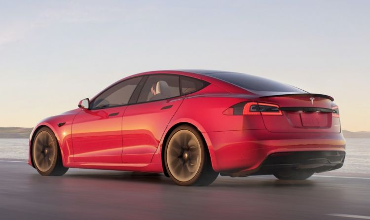
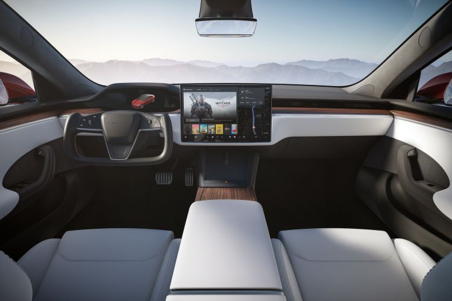
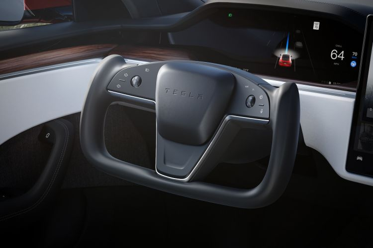

TESLA "Elon Musk"

Tesla Model S
El Tesla Model S es una berlina eléctrica, del segmento E, fabricada por Tesla desde 2012. Aunque se trata de un producto veterano, ha sufrido ligeras actualizaciones con el paso de los años. El Tesla Model S tiene cinco plazas distribuidas en dos filas de asientos, pero opcionalmente se puede equipar con siete plazas gracias a una tercera fila con dos asientos para niños. El Tesla Model S se produce en la planta de fabricación que Tesla tiene en Fremont, California (Estados Unidos). Entre las berlinas eléctricas que aspiran a rivalizar con el Tesla Model S nos encontramos con modelos como el Porsche Taycan, el Audi e-tron GT, o el Mercedes EQE. No te pierdas nuestra guía de compra de coches eléctricos con información detallada de todos los coches eléctricos del mercado. En Diariomotor, hemos tenido oportunidad de hacer una prueba del Tesla Model S, conducirlo, analizar su interior y ver cómo va.
En el interior, el Tesla Model S opta por el minimalismo propio de las últimas tendencias, con el mínimo número de botones e interruptores posibles. Esto es posible gracias a la centralización de funciones a través de una gigantesca pantalla táctil que al contrario que su predecesor, abandona el formato vertical tipo tablet, para adoptar una horizontal tipo flotante con 17 pulgadas de tamaño. La instrumentación también recurre a una pantalla completamente digital. El habitáculo del Tesla es, como viene siendo habitual en este tipo de coches, apto para cinco pasajeros, pero mejor acondicionado para sólo cuatro ocupantes. No obstante, el Model S ofrece, de forma opcional, una tercera fila de asientos de emergencia con dos plazas pensadas para niños, que viajarán en sentido contrario a la marcha. El Tesla Model S dispone de dos maleteros gracias a la ausencia de un motor térmico que ocupe espacio en la parte frontal.
En el interior, el Tesla Model S opta por el minimalismo propio de las últimas tendencias, con el mínimo número de botones e interruptores posibles. Esto es posible gracias a la centralización de funciones a través de una gigantesca pantalla táctil que al contrario que su predecesor, abandona el formato vertical tipo tablet, para adoptar una horizontal tipo flotante con 17 pulgadas de tamaño. La instrumentación también recurre a una pantalla completamente digital. El habitáculo del Tesla es, como viene siendo habitual en este tipo de coches, apto para cinco pasajeros, pero mejor acondicionado para sólo cuatro ocupantes. No obstante, el Model S ofrece, de forma opcional, una tercera fila de asientos de emergencia con dos plazas pensadas para niños, que viajarán en sentido contrario a la marcha. El Tesla Model S dispone de dos maleteros gracias a la ausencia de un motor térmico que ocupe espacio en la parte frontal.
